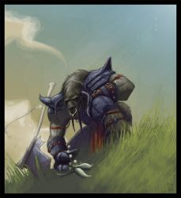

Récits Légendes de Kirin Tor Personnages Célébrités Guildes
Outils Calendrier Calendrier Illustré Mod d'interface
Informations Historiens FAQ Liens Crédits
Les légendes de Kirin Tor
==> Afficher les personnages de Chiron
Chiron
 Age : Moins de 6000 ans
Age : Moins de 6000 ans
Sexe : Homme
Race : Elfe
Faction : Alliance
Formation : Druide
Description : Sauvage, sombre et mystérieux, Chiron est un des premiers et plus anciens adeptes de la Voie Férale des Druides, porté par un passé sombre dont il a presque tout oublié et habité par une force qu'il apprends au fil du temps a mesurer et découvrir.
Il fut a l'origine de la fondation de l'Oeil du Crépuscule, un groupuscule d'Aventuriers et de vagabonds mûs par le souhait de la Paix et le Repos de la Terre, ayant choisi d'agir depuis les Ombres pour terrasser les véritables ennemis de la Vie : Légion, Fléau... Dragons et autes horreurs.
Aujourd'hui, Chiron a réussi a se libérer - en partie du moins - de l'Emprise que sa Nature Férale imposait à sa part Elfique, reprenant ainsi un contrôle plus grand sur les incarnations des Esprits Druidiques qui l'habitent, ainsi que sur l'autre chose plus sombre et violente tapie au fond de lui.
A force de patience, de méditation, et grâce à l'aide de nombreuses personnes, il a consacré désormais ses pouvoirs à la Restauration des Energies Naturelles , préserve désormais toute Vie soumise a son champ d'action par ce biais, et le fait avec une dévotion et un calme redoutable, quelle que soit la situation.
Il passerait beaucoup de son temps à Reflet de Lune, a disserter et lire avec Rabine Saturna, les rares fois où il s'accorde le repos, où a méditer près du Refuge des Saisons.
Il aurait combattu et vaincu avec son Clan certains des périls les plus sombres de ce monde, des profondeurs de la Terre jusque dans l'Antre de Dragons anciens, et si nul ne sait vraiment ce dont ils sont capables ou ce qu'il en est réellement, une chose est sûre : c'est qu'il sont revenus pour en parler, et porteurs de butins de guerre conséquents.
On dit cependant que parfois, des soirs de pleine Lune, il disparait complètement pour ne réapparaitre que le lendemain, tard, et souvent à l'autre bout du monde, sans souvenirs de sa nuit passée. On murmure aussi qu'il ne s'est pas encore totalement affranchi de l'influence de ses Aspects animaux, qui ont eut tant de prise sur lui qu'ils l'auraient marqués de leur empreinte à jamais, et se disputeraient le contrôle de son Esprit d'Elfe...
Plus d'infos sur Chiron >>>
Lire les 23 récits de Chiron >>>
Chantelame
Age : Très JeuneSexe : Homme
Race : Tauren
Faction : Horde
Formation : Guerrier
Description : Chantelame est un Guerrier Tauren, au caractère très innapproprié a sa condition : timide et réservé, gentil comme tout, curieux de plein de choses mais particulièrement peu futé, et surtout hypersensible. Terrifié par les mots de plus de 3 syllabes, les phrases trop longues, les hauteurs, les grottes sombres et les araignées, il fait pourtant preuve dans toute autre circonstance d'un courage et d'une volonté sans pareille.
Il est très jeune, et insouciant, se considère encore comme un Veau même si ses amis cherchent a lui prouver qu'il est un Taureau maintenant.
Plus d'infos sur Chantelame >>>
Lire le récit de Chantelame >>>